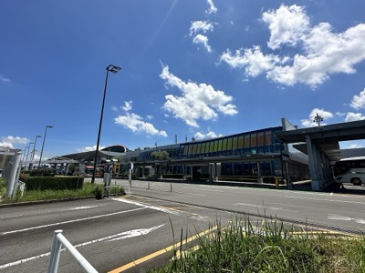
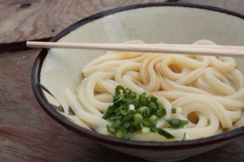
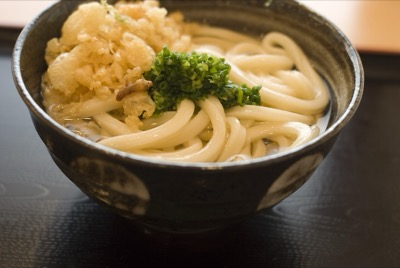
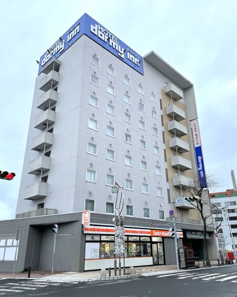
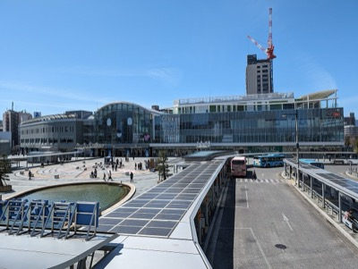
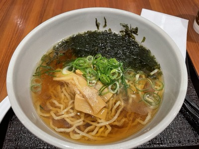
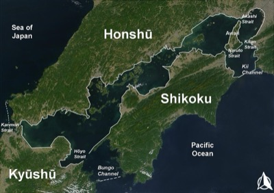
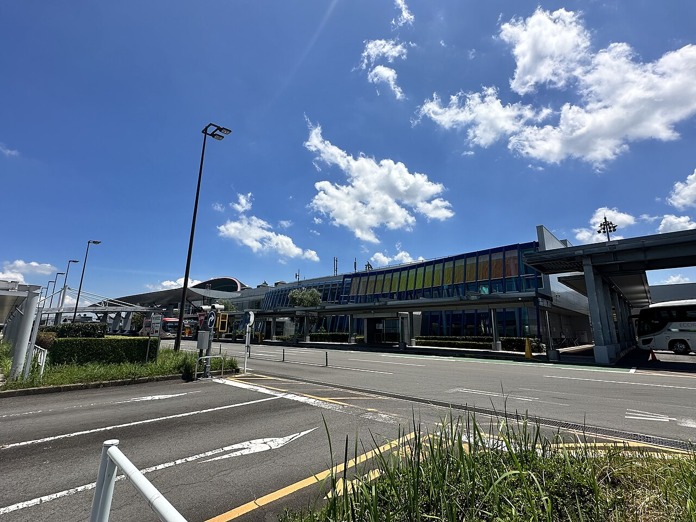

03 — 行程
✈️ 移動日
🍜 烏龍麵
Day 1
抵達高松
抵達高松
📍 4/12（日） ｜ 香川・高松
- 14:30 桃園機場起飛 ✈️
- 18:05 抵達高松機場 🛬
- 19:00 機場巴士到高松駅（約45分鐘）🚌
- 19:45 入住 Dormy Inn 高松 🏨
- 20:00 讚岐烏龍麵初體驗！ 📍
- 21:00 Dormy Inn 天然溫泉＋免費宵夜拉麵 ♨️🍜








